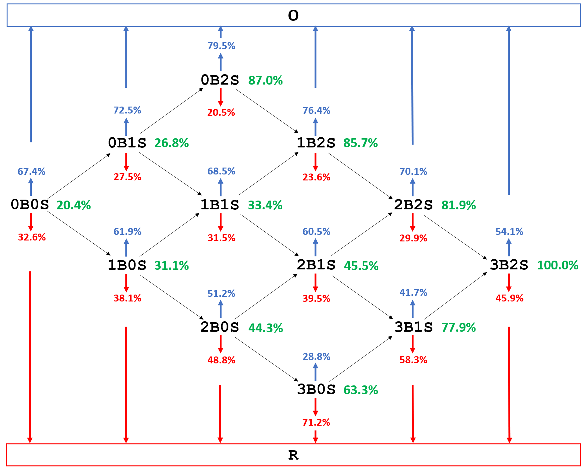
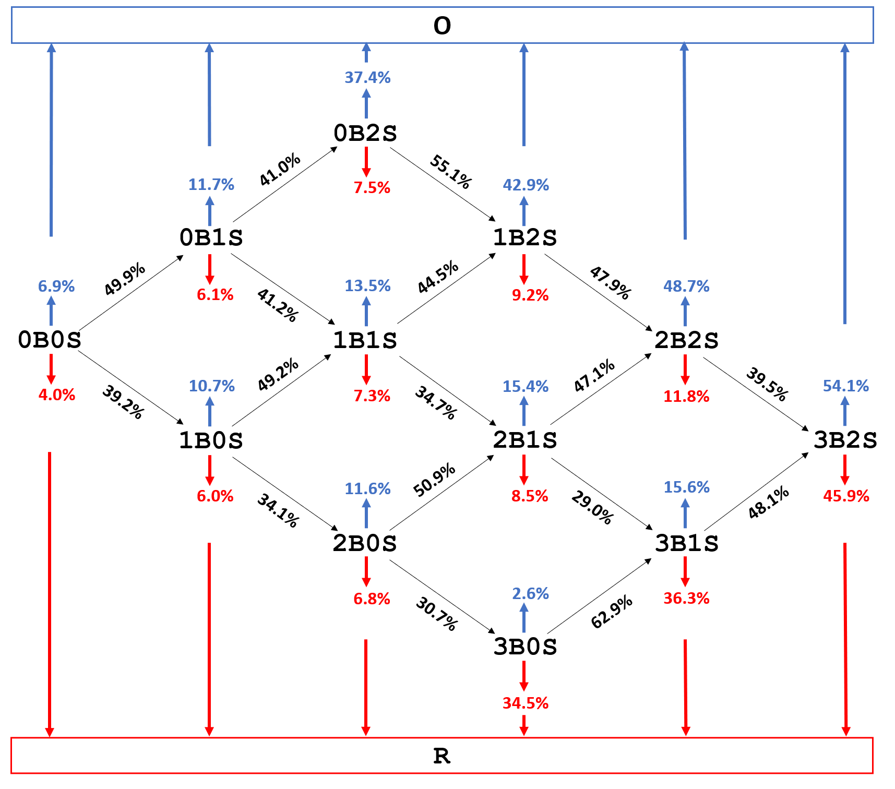
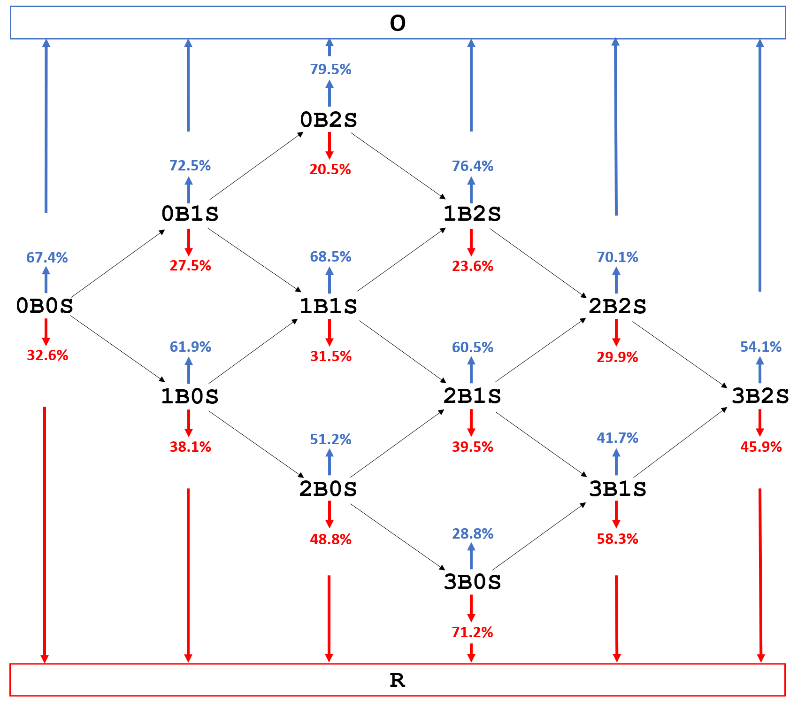

카운트 전이 확률로 계산한 상황 중요도
A measure of the importance of moment for ball-strike counts in a baseball plate appearance
한 투구가 타석의 유불리를 얼마나 바꾸는지 IOM(Importance of Moment)으로 정의했습니다. 타석이 즉시 끝나는 경우와 볼·스트라이크로 이어지는 경우를 구분해 가중하고, 카운트별 중요도를 패스트볼 구속과 연결해 분석했습니다.
- 방법: 14개 상태의 마르코프 모형 → 아웃 확률 → IOM
- 결과: IOM·평균 구속의 순위 상관 0.90


연구 문제
같은 스트라이크라도 0볼 0스트라이크에서 던졌을 때와 2스트라이크에서 던졌을 때의 의미는 다릅니다. 현재 카운트가 투수에게 얼마나 유리한지와, 다음 투구 결과가 얼마나 중요한지도 구분해야 합니다. 이 연구에서는 한 타석 안에서 다음 투구가 최종 아웃·출루 확률을 얼마나 바꿀 수 있는지 정량화했습니다.
테니스는 한 포인트의 승패에 따른 두 다음 상태의 승리 확률 차이로 중요도를 정의할 수 있습니다. 야구는 어느 카운트에서도 타구·사구 등으로 타석이 즉시 끝날 수 있어, 볼 이후와 스트라이크 이후의 차이만으로는 투구의 중요도를 충분히 설명하기 어렵습니다. 이 종료 가능성까지 포함하는 척도를 제안했습니다.
접근 방법
1. 투구 기록을 상태 전이로 표현
2015–2018년 MLB Statcast의 2,867,154개 투구와 727,031개 타석을 전처리했습니다. 볼 0–3개와 스트라이크 0–2개의 조합인 12개 카운트에 아웃(O)·출루(R) 두 종료 상태를 더해, 14개 상태의 이산 시간 마르코프 체인을 구성했습니다. 각 카운트에서 다음 상태로 이동하는 확률은 실제 기록의 빈도로 추정했습니다.
2스트라이크 이후 카운트를 바꾸지 않는 파울은 전이에서 제외했습니다. 따라서 모형의 한 단계는 모든 실제 투구가 아니라 카운트 또는 타석 결과를 바꾸는 사건입니다. 아웃·출루에 도달하면 타석이 끝납니다.
상태 전이와 최종 아웃·출루 확률 그림


2. 현재 카운트의 유불리 계산
각 카운트에서 타석이 최종적으로 아웃으로 끝날 확률을 q(s)로 두고, 다음 상태의 아웃 확률을 전이 확률로 가중하는 후진 계산을 적용했습니다. 아웃 상태의 q는 1, 출루 상태의 q는 0입니다.
q(s) = Σ P(다음 상태 = s′ | 현재 상태 = s) × q(s′)
0볼 2스트라이크의 최종 아웃 확률은 79.48%, 3볼 0스트라이크는 28.83%였습니다. 이 값은 현재의 유불리이며, 다음 투구의 중요도와는 다른 양입니다.
3. 즉시 종료와 카운트 진행을 가중한 IOM
다음 사건이 아웃·출루로 타석을 끝내면 두 결과의 아웃 확률 차이는 1입니다. 타석이 계속되면 볼 이후와 스트라이크 이후 상태의 최종 아웃 확률 차이를 사용했습니다. 두 차이를 각각의 발생 확률로 가중해 IOM을 계산했습니다.
IOM(s) = P(즉시 종료 | s) × 1
+ P(타석 계속 | s) × |q(볼 이후) − q(스트라이크 이후)|
예를 들어 2볼 1스트라이크는 즉시 종료 확률 23.9%와 진행 확률 76.1%를 갖습니다. 볼 이후 3볼 1스트라이크의 아웃 확률은 약 41.7%, 스트라이크 이후 2볼 2스트라이크는 약 70.1%여서, IOM은 약 45.52%입니다. 3볼 2스트라이크에서는 다음 유효 사건이 반드시 타석을 끝내므로 IOM은 100%가 됩니다. 계산은 반올림 전 확률을 사용했습니다.
기여
공동 제1저자로 참여해 복잡한 타석 전이 구조에서도 한 투구의 중요도를 해석할 확률적 척도를 제안했습니다. 현재 카운트의 유불리와 다음 투구의 중요도를 구분하고, IOM이 실제 투수의 행동과 어떤 관계를 갖는지 분석했습니다.
카운트에 따라 달라지는 중요도
0볼 0스트라이크의 IOM은 20.39%, 0볼 1스트라이크는 26.78%, 0볼 2스트라이크는 87.02%였습니다. 스트라이크가 한 개 늘더라도 중요도의 변화 폭은 같지 않습니다. 특히 2스트라이크 상황과 풀카운트는 높은 중요도를 보였습니다.
IOM과 패스트볼 구속의 관계
12개 카운트의 IOM 순위와 평균 패스트볼 구속 순위 사이의 Spearman 상관계수는 0.90(p < 0.0001)이었습니다. 높은 중요도의 카운트에서 평균 구속도 높았지만, 순서가 모든 카운트에서 일치한 것은 아닙니다.
12개 카운트의 IOM·평균 구속 비교
| 카운트 | IOM (%) | 평균 구속 |
|---|---|---|
| 3B2S | 100.00 | 92.41 |
| 0B2S | 87.02 | 92.28 |
| 1B2S | 85.70 | 92.19 |
| 2B2S | 81.90 | 92.29 |
| 3B1S | 77.95 | 92.07 |
| 3B0S | 63.33 | 91.86 |
| 2B1S | 45.52 | 91.96 |
| 2B0S | 44.28 | 91.89 |
| 1B1S | 33.45 | 91.79 |
| 1B0S | 31.15 | 91.70 |
| 0B1S | 26.78 | 91.82 |
| 0B0S | 20.39 | 91.79 |
2015–2018년 사이영상 투표에서 한 표 이상 받은 투수를 우수 투수 집단으로 정의했습니다. 이 집단의 IOM·구속 순위 상관은 0.78(p = 0.0030)이었습니다. 전체 투수와의 구속 차이는 Table 9 기준 0스트라이크에서 0.27mph, 1스트라이크에서 0.34mph, 2스트라이크에서 0.49mph로 커졌습니다.
모형 검증과 해석의 한계
같은 카운트에서도 이전 카운트에 따라 결과가 달라지는지 검증했습니다. 2볼 1스트라이크와 2볼 2스트라이크에서는 최종 아웃 비율에 각각 0.78%p, 0.50%p의 경로별 차이가 있어 경로 독립성 가정이 완전히 성립하지 않았습니다. 모형의 최종 아웃 확률은 실제 타석 결과 비율과 대체로 가까웠지만, 이러한 근사 가정을 함께 고려해야 합니다.
구속 분석은 카운트별 집계 자료의 관계를 설명하며, 중요도가 구속을 높인다는 인과 효과나 특정 투구 전략의 효과를 검증한 결과는 아닙니다. 우수 투수 선정에는 선발 투수 편향이 있을 수 있고, 패스트볼 구속만으로 투구의 전체 품질을 평가할 수 없습니다. 투수 역할별 비교와 변화구의 회전·궤적 분석은 후속 연구 방향입니다.